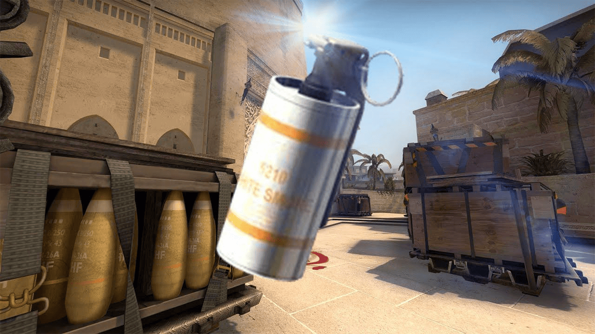
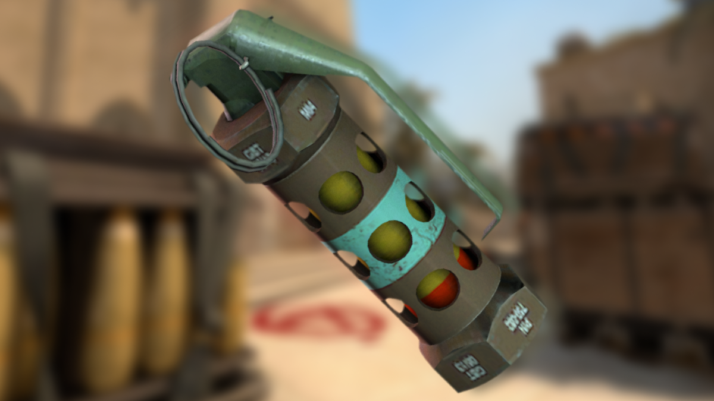
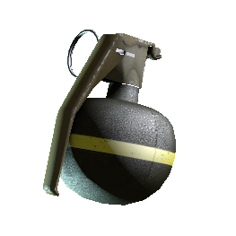

(Натисніть на картинку, щоб відкрити повнорозмірний варіант)
⬅ Повернутися на головну | Офіційний сайт CS2
Counter-Strike 2 — це легендарний тактичний шутер від першої особи. Дві команди змагаються між собою на різних картах, використовуючи широкий арсенал зброї.
Головні складові успіху — це командна робота та знання економіки гри.
(Натисніть на картинку, щоб відкрити повнорозмірний варіант)
| Граната 1 | Граната 2 | Граната 3 |
|---|---|---|
 |
 |
 |
| Перекриває видимість. | Осліплює ворогів. | Завдає вибухової шкоди. |
| Зброя | Характеристики | |
|---|---|---|
| Урон | Пробиття броні | |
| AK-47 | 36 одиниць | 77.5% |
| M4A4 | 33 одиниці | 70% |